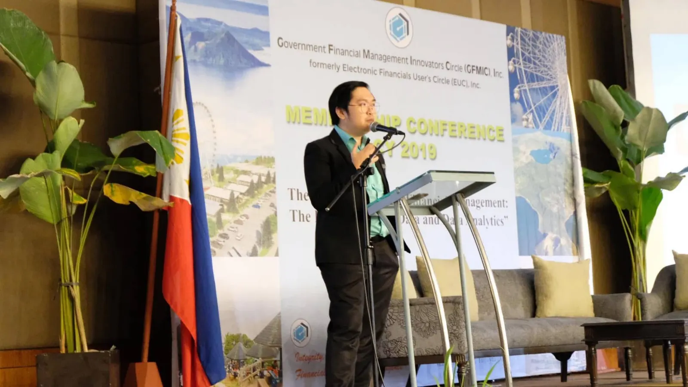

Automate
Replace repetitive manual checks with scheduled jobs that alert the right people.
See it in practiceOpen to part-time & contract · Remote · UTC+8
JOHN BERLYN ISIP / SENIOR FULL-STACK DEVELOPER
I build the interfaces, connect the systems, and automate the work in between. 13+ years turning complex business processes into software people can rely on.
Move your pointer to change perspective.
Production work for
01 / What I deliver
Replace repetitive manual checks with scheduled jobs that alert the right people.
See it in practiceConnect the systems you already use so data moves without copy and paste.
See it in practiceCustom internal tools around your business rules, on web, desktop, or mobile.
See it in practice02 / How a project runs
Talk to the people doing the work. Map the rules and the exceptions.
Pick the fit: a workflow, an integration, or a custom app.
Test the business rules, document the system, release.
Maintenance is part of the job, not an afterthought.
AI-assisted, with accountability. Codex, Claude Code, and GitHub Copilot support development. I review the code, validate the behavior, and own the result.
03 / Selected work
01NGCP · Current work
Process improvement, compliance, and reporting workflows delivered as modules on one Django platform.
Documents, requests, operational data
Workflow modules, background jobs, AI processing
Records and compliance reporting
02Business apps · Cross-platform
One Flutter codebase on Windows and Android, with a local-first data layer built for sync.
Windows desktop and Android apps
Drift and SQLite store data on the device
Changes shared when a connection is available
03NGCP · Energy operations
Operations and market interface teams run their five-minute interval checks from the same dashboard.
SCADA telemetry and market data
Matched to each five-minute interval
A dashboard for operations and market teams
04NGCP · Systems integration
A shared Active Directory identity for existing apps and new internal tools, adopted one app at a time.
Individual logins across applications
Adopt central sign-on, one app at a time
Active Directory authentication across apps
Independent project
Rosters, loot auctions, and rewards for a game guild. Designed and built by me, from the workflow to deployment.

04 / Career
Energy, government, property, healthcare, and investigation software. In-house in the Philippines, remote for Australia and the US.
Or walk it as a side-scroller, built with no libraries.
Jul 2024 - Present
National Grid Corporation of the Philippines
Oct 2023 - Apr 2024
Realtair, Inc. (Remote)
Feb 2023 - Sep 2023
GoTeam / Comtrac (Remote)
Sep 2022 - Feb 2023
Theoria Medical (Remote, USA)
Jan 2016 - Sep 2022
National Grid Corporation of the Philippines
2013 - 2015
Teradata, Commission on Audit, NGCP
Walk with ← / → or A / D, jump with W / Space, or tap a station. Visit every station, jump into the ⚙ blocks, and reach the gate to ship.
Academic foundation & public service
Education
Polytechnic University of the Philippines
Philippine civil service
Career Service Professional Eligibility · 2014
Meets the civil service eligibility requirement for a range of Philippine government positions, including clerical and technical roles.
05 / From a former lead
John consistently demonstrated exceptional diligence, a remarkable aptitude for learning, and an unparalleled ability to devise ingenious solutions to complex problems.
“Regardless of the complexity or novelty of the task, John eagerly took on every challenge, showing an unwavering commitment to delivering top-notch results.”
06 / Stack
A broad production background, so I can work with the systems you already run.
Current work
Production experience
Working knowledge
07 / About
I’m JB, based in Quezon City. I like learning how a business runs, then making the hard or repetitive part of someone’s day easier. I’ve led enterprise projects, contributed to architecture, and mentored junior and mid-level developers.
Outside software, I serve as a youth pastor at Come to Jesus Church Montalban and consult for GFMIC, Inc.
08 / Speaking
Now and then I step away from the editor to talk about data and the systems behind financial management work.
2019GFMIC, Inc. · Membership Conference
“Landscaping Financial Management: The Essential Use of Data and Data Analytics”
My case to the room: data is the gold, not the paperwork it arrives in. Refined, raw records become business intelligence and then forecasting, so the next decision rests on what the numbers say rather than on a hunch.
I used BITBo to make that concrete, the Barangay IT Robot, a GFMIC app that keeps a barangay’s records in one place: profiles and citizens, clearances, blotter cases, local businesses, legislation.
BITBo on gfmic.phThe audience was GFMIC members, financial management practitioners from government agencies.

Government Financial Management Innovators Circle (GFMIC), Inc. · Select a photo to enlarge
Get in touch
What’s still being done by hand? Tell me about the process, the systems involved, and where your team gets stuck. Part-time or contract, fully remote.